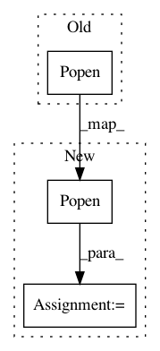

898e47242527e402f4d014fd084c31843d64d1b8,python/ray/test_utils.py,,run_string_as_driver_nonblocking,#Any#,117
Before Change
with tempfile.NamedTemporaryFile(delete=False) as f:
f.write(driver_script.encode("ascii"))
f.flush()
return subprocess.Popen(
[sys.executable, f.name],
stdout=subprocess.PIPE,
stderr=subprocess.PIPE)
def flat_errors():
errors = []
After Change
"del sys",
"exec(\"del script\\n\" + script)",
])
proc = subprocess.Popen(
[sys.executable, "-c", script],
stdin=subprocess.PIPE,
stdout=subprocess.PIPE,
stderr=subprocess.PIPE)
proc.stdin.write(driver_script.encode("ascii"))
proc.stdin.close()
return proc
In pattern: SUPERPATTERN
Frequency: 3
Non-data size: 3
Instances
Project Name: ray-project/ray
Commit Name: 898e47242527e402f4d014fd084c31843d64d1b8
Time: 2020-06-27
Author: mehrdadn@users.noreply.github.com
File Name: python/ray/test_utils.py
Class Name:
Method Name: run_string_as_driver_nonblocking
Project Name: streamlit/streamlit
Commit Name: 31a2ba7f10082baddaee2e14b478e017a722233e
Time: 2019-03-05
Author: 44782696+aaj-st@users.noreply.github.com
File Name: lib/streamlit/process_runner.py
Class Name:
Method Name: run_handling_errors_in_subprocess
Project Name: microsoft/nni
Commit Name: 098d89af300d50278a8be7cf639010c10954333c
Time: 2021-01-05
Author: 33053116+J-shang@users.noreply.github.com
File Name: nni/experiment/launcher.py
Class Name:
Method Name: _start_rest_server